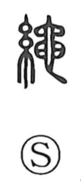

縄

Uncategorized
Kun: nawa | On: jo
rope ・ ink line ・ to measure ・ rule ・ law ・ to rectify
Explanation
Originally written as 繩, this is a phono-semantic character formed with 糸, “thread,” and the phonetic 黽. The phonetic once read yō, which in this word shifted to the on reading jō—a change comparable to the shift from yō to jō seen elsewhere. Whereas 索 denotes a thick rope, 縄 refers to a long, slender cord. Because such cord served as the carpenter’s ink line (墨縄) for snapping straight lines on wood or stone, the character came to mean “ink cord,” and by extension “to measure,” “rule/law,” and “to set straight, rectify.” The expression 縄文・鳥跡—“cord impressions and bird tracks”—evokes the very beginnings of writing.